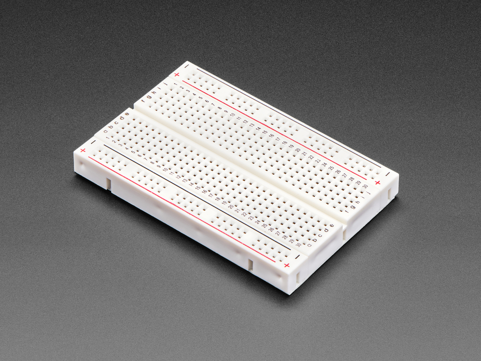
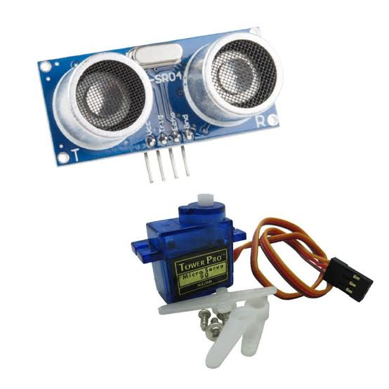
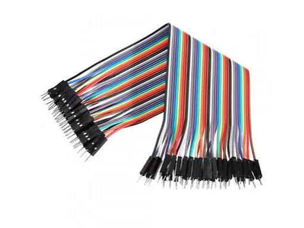

🛠️ Prototype-first thinking
Ideas moved from concepts to working circuits and physical builds with a strong focus on experimentation.
Bright, modern notes about Arduino, breadboarding, and ultrasonic sensor learning in a colorful and friendly layout. 🚀
Ideas moved from concepts to working circuits and physical builds with a strong focus on experimentation.
Students combined electronics, design, and practical fabrication to bring smart projects to life.
Each stage emphasized testing, troubleshooting, and improving the project step by step.

A versatile programmable board used to read sensors, drive actuators, and control physical systems.
Common uses: robotics, automation, prototypes, and embedded learning.

A reusable board with connected rows for inserting components and wires without soldering.
Tip: map power rails and grouping before placing components for easier wiring.
This image shows the typical layout of a solderless breadboard with power rails and connection rows.

Measures distance by sending sound pulses and timing the echo. Great for obstacle detection and robotics.
Uses: rangefinding, robot navigation, and simple proximity sensing.
This image shows the HC-SR04 ultrasonic module used for Arduino distance sensing projects.

These are commonly used for breadboard and Arduino connections. Each end has a male pin, so they plug into headers and breadboard holes easily.
Tip: use different colors to keep signal, power, and ground connections clear.
Jumper wires are flexible wires with male and/or female pin ends. They make it easy to connect the Arduino, breadboard, and sensors without soldering.
Hookup wires are usually single conductors with insulation. Use them for reliable point-to-point wiring when building circuits on breadboards or inside enclosures.
Power wires are thicker wires used for 5V, ground, and higher-current connections. Red is often used for positive voltage and black for ground so the wiring stays easy to follow.
Ribbon cables are flat bundles of parallel wires used when many signals must travel together. They are handy for sensors, displays, and modules with multiple pins.
In Week 2 we dealt with circuit components and practical work. We were told to develop our projects, and we worked on two ideas that connected electronics with movement and control.
Tools we needed and their uses:
In Week 3 we focused on building and testing our projects more carefully. We also did 3D designing using SolidWorks to create parts for our projects.

This is an example of a simple chassis made for one of the projects using a laser cutter.